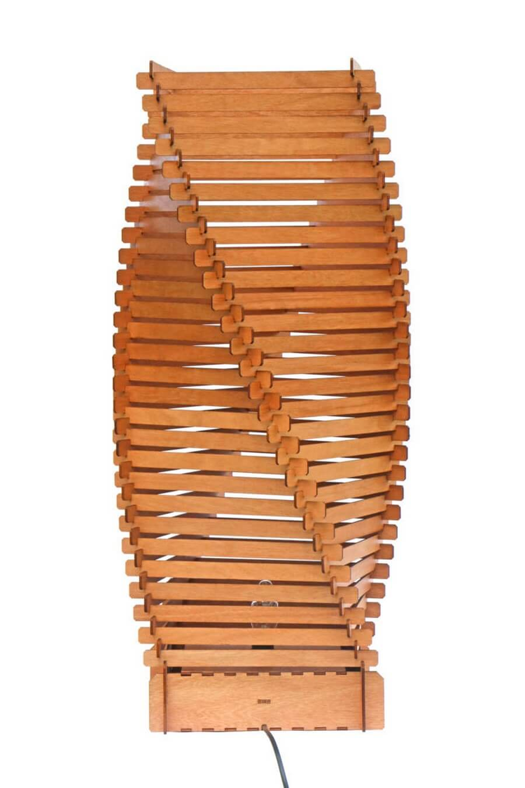
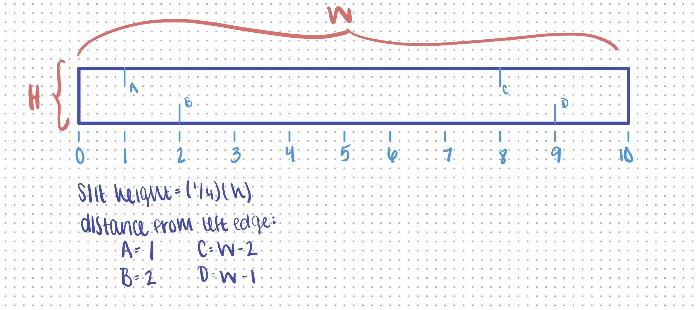
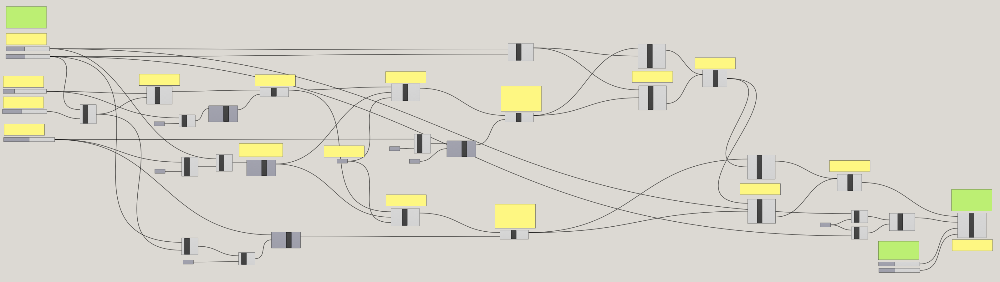
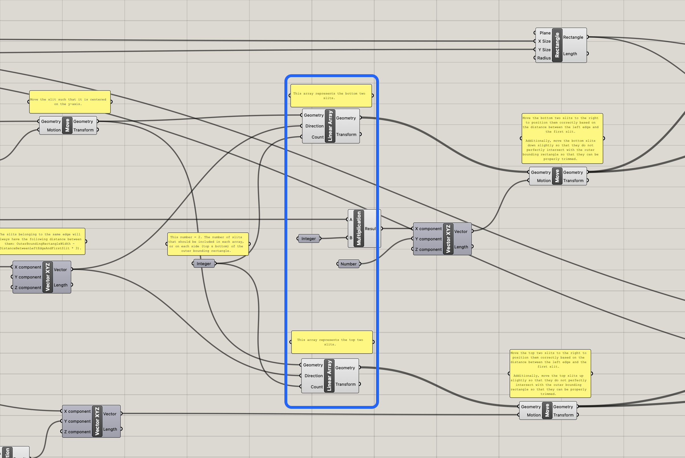
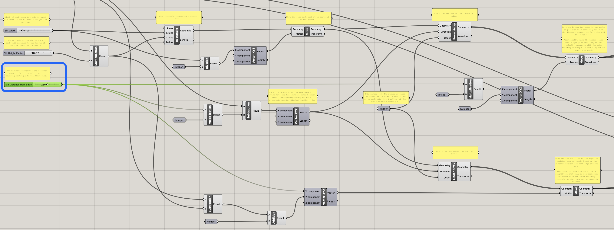
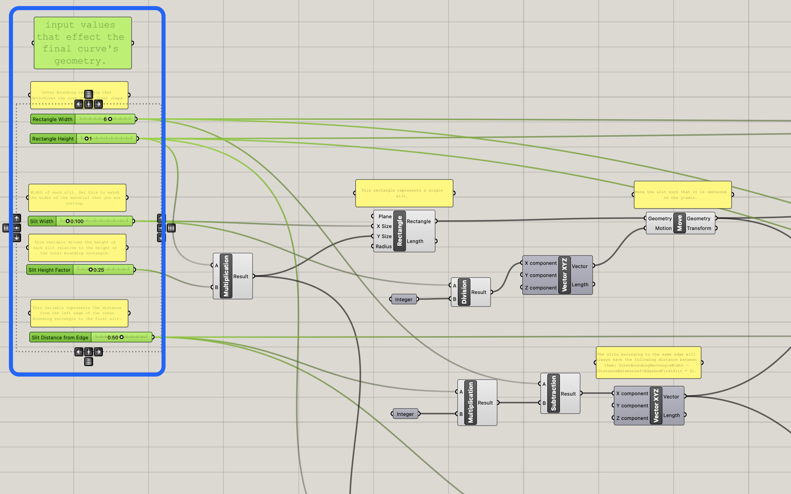
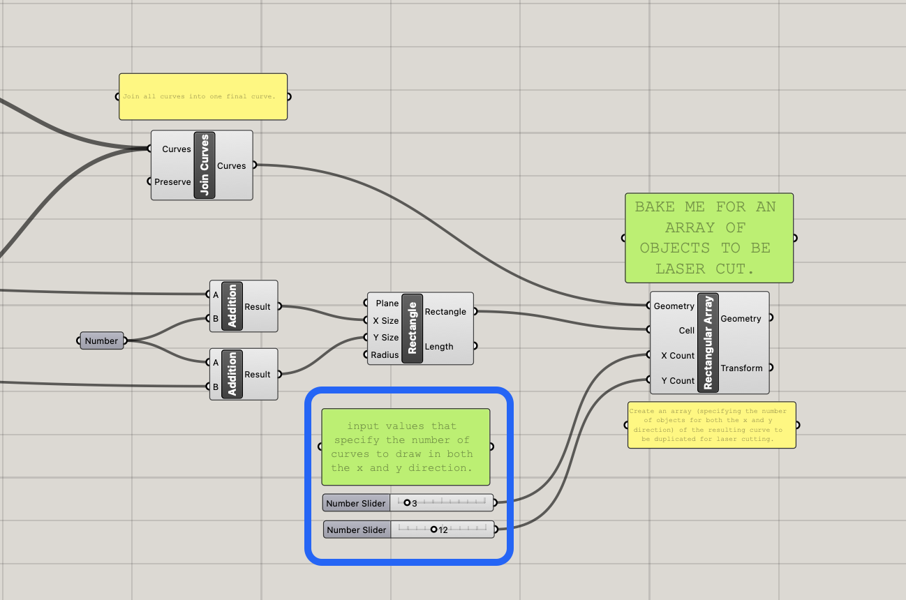
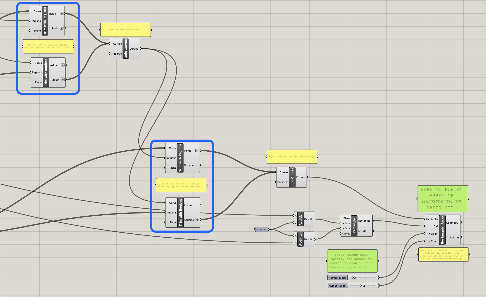
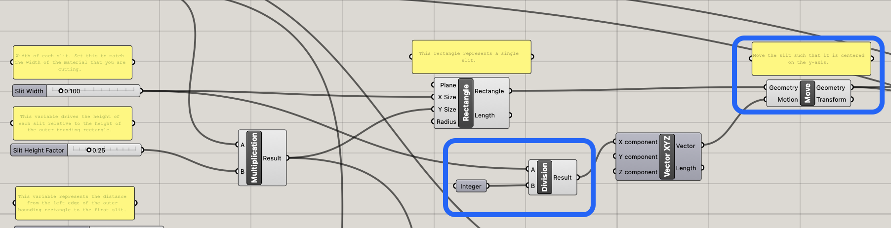
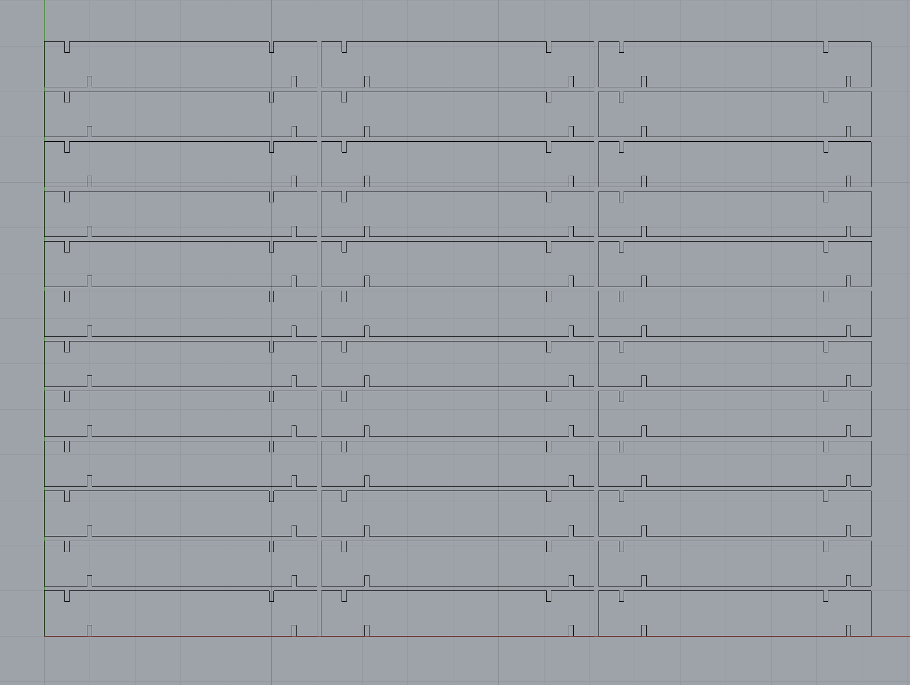

Assignment 2: Parametric Modeling with Grasshopper!
Jessica Douma | HCDE 533 | Autumn 2022

For this assignment, we were tasked with creating a parametric model using grasshopper that could be used to laser cut 30 press fit construction pieces. I went to the web for parametric inspiration and decided to recreate this design from Parametric House.


In an effort to recreate the piece, I started with a paper prototype to ensure that my design would achieve the same rotating effect. At first look, I thought all of the slits were slightly shifted on each piece to achieve the rotating effect and didn't know how to even begin determining what equation I should use to determine that... but after taking a closer look at the pictures I noticed that the top and bottom slits were just shifted differently. So, I started by making a (not very precise) paper prototype to validate my understanding of how my inspiration was constructed. My prototype was a bit wobbly at first without a base to sit on, but I decided to move forward with modeling it anyway.

Before going straight to Grasshopper, I sat down with my prototype pieces to figure out how to represent different parts of my design in terms of equations and variables. I knew that if I wanted to support variable size rectangles, I would need to be able to represent the positioning of the slits as equations so that they would dynamically update as the inputs change. Next, I moved onto modeling my design in Grasshopper.

My final grasshopper piece was a bit of a beast... but here’s a high-level summary of the approach I took.
- Draw the outer rectangle, where the width and height could be varied
- Draw a single slit, where the width and height could be varied
- Position the single slit centered over the y-axis
- Create a linear array of the slit, such that it contains two slits
- Make a copy of the linear array of slits for the top edge
- Move each linear array to its final position based on a variable that determines how far the first slit should be from the left edge
- Trim the rectangle with the slits and vice versa and join the resulting curves
- Create an array of the final curve (where the number of items in the x and y direction can be varied) to be baked and used for cutting
- Add all the comments so that when I look at this sometime in the future, I can remember what the heck is going on.

You’ll notice a few differences between my approach and my pen and paper representation. The most noticeable difference is my use of the linear arrays for the slits. When I was representing the slits on paper, I was initially intending to draw four separate rectangles and position each of them individually based on the equations I laid out. But once I got into Grasshopper, I realized that instead of positioning each one individually, I could instead use a linear array and define the space between each slit with an equation to achieve the same result without having to explicitly draw and position as many rectangles.

Step 6 also saw a slight change from my initial plan. Originally, I had planned for the left-most slit to be positioned one unit (1 inch in my case) from the left edge. However, I later realized that this didn’t work well for pieces that were smaller than about 10 inches. So, I decided to make this a variable that the user could control, and input based on other inputs.
 
Steps 2 and 8 were the most helpful when it came to laser cutting. Being able to easily and precisely change the width of the slits, as well as the size of the array for printing based on what would fit on my cardboard really reduced my time spent at the Mill to actually perform the laser cutting. I wanted to make as much of my design variable as possible, so in addition to being able to dynamically set the width and height of the rectangle, and the width of the slits, I also allowed the slit height to be variable so that the user could adjust the spacing between each level of the structure. Additionally, the user can input the distance from the left edge and first slit, and the distances between the slits will update to keep the curve symmetrical.

Lastly, Step 7 proved to be the most difficult for me since I didn’t realize that your shapes edges couldn’t perfectly intersect otherwise there wouldn’t be an inside/outside to trim. I couldn’t get the shapes to trim after many tries, so after moving them around for debugging purposes I finally got it working and realized that they couldn’t be perfectly aligned.

Overall, modeling in grasshopper was pretty straightforward to me; coming from a software engineering background really helped me understand how to break down the problem and understand how the inputs and outputs worked for each component in grasshopper similarly to functions or methods. My biggest gripe with grasshopper was how difficult it could be to go back and make simple edits, largely due to it being a graphical user interface. For example, on my pen and paper iteration of the model, I left out step 3, but during modeling noticed that my piece wasn’t completely symmetrical. I quickly realized that this was because I hadn’t centered the slit before duplicating it via an array and setting the distance between them. But going back and adding that simple change was more complicated than it should have been. I couldn’t just update a typed-out equation to subtract the width divided by two but had to add a new move component which required a vector component which required a division component which required an integer component. While logically I understand why I had to do it this way, it was a frustrating experience.

With my grasshopper model ready to go, I measured the size of cardboard to determine how many pieces I could fit in each direction. I set all my variables to the dimensions I wanted and baked a 3 by 2 array of my final curve for a test cut. I exported the file to Adobe Illustrator, updated the stroke weight, and sent my job to the printer with the following settings: speed 30, power 80, frequency 50. While this test cut was successful, just one piece didn’t fully detach when removing my pieces, so I decided to lower the speed for my final cut. I updated my model to print a 3 by 12 array of my curve this time, re-exported it to Adobe Illustrator, and sent my job to the printer with the following settings: speed 25, power 80, frequency 50.

Success! My 36 pieces were cut, and I was able to construct them into their final structure. And after playing around with the pieces some more, I figured out how to layout the pieces such that it wasn’t lopsided and didn’t wobble due to an uneven base.
Source Files
Grasshopper file
Rhino file of final array used for laser cutting
Rhino file of test cut array used for laser cutting
Acknowledgements
Emily Rowland for meeting up with me at The Mill to laser cut and teaching me new details about the laser cutter that were super helpful for printing!